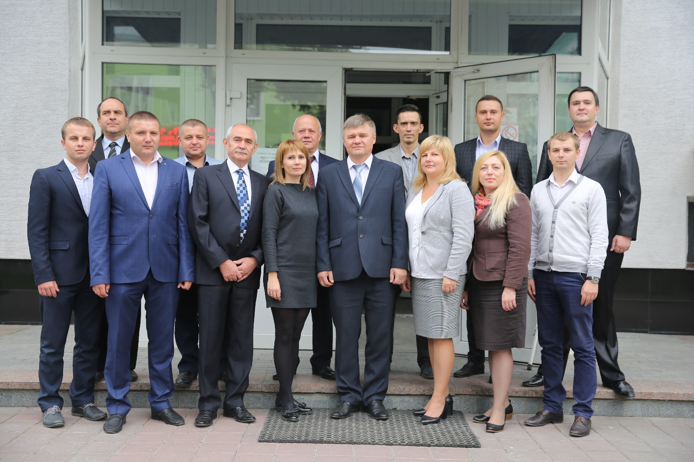

Кафедра комп’ютерної інженерії є випусковою кафедрою з напряму підготовки "Комп'ютерна інженерія" для освітніх ступенів (ОС) "Бакалавр" та "Магістр", Освітньо-кваліфікаційного рівня (ОКР) "Спеціаліст" зі спеціальності "Комп'ютерна інженерія".
Завідувач кафедри професор, д.т.н. Березький Олег Миколайович.
За кафедрою закріплені такі лабораторії: "Фізики та комп’ютерної електроніки" (ауд. 6302), "Телекомунікаційних та мікроконтролерних систем" (ауд. 6303)," Автоматизованого проектування комп’ютерних систем та мереж" (ауд. 6306). В лабораторіях проводяться заняття для студентів усіх спеціальностей факультету комп’ютерних інформаційних технологій.
Кафедра Кафедра
Кафедра комп’ютерної інженерії веде такі дисципліни: комп’ютерна графіка, комп'ютерна електроніка, теорія електричних та магнітних кіл, фізика, комп'ютерно-інтегровані технології, комп'ютерні системи, телекомунікаційні системи, захист інформації в комп'ютерних системах, технологія проектування комп’ютерних систем, дискретна математика, алгоритми та методи обчислень, техніко-економічне обгрунтування розробки КС, організація баз даних, об’єктно-орієнтоване програмування, комп’ютерні системи штучного інтелекту, комп'ютерна криптографія, моделювання комп'ютерних систем, проектування комп'ютерних систем на програмованих логічних мікросхемах
Штат кафедри
Навчальний процес на кафедрi забезпечують :
докторів наук – 4 особи, в т.ч., професорів – 3 особи;
кандидатів наук – 12 осіб, в т.ч., доцентів – 10 особи;
викладачів – 8 осіб, в.т.ч., аспірантів - 4 особи
Кафедра

Наукова робота
На кафедрі проводяться наукові дослідження по таких напрямах:
розробка методів, алгоритмів та програмних засобів для аналізу та синтезу складних зображень різної природи;
Науково – дослідній роботі 0113U000849 «Дослідження електро- та світлотехнічних параметрів сучасних напівпровідникових джерел світла», керівник доц.. Паздрій І.Р.
побудова інтелектуальних біомедичних та вимірювальних систем;
автоматизація проектування та моделювання мікроелектромеханічних систем та інтегральних схем;
високопродуктивні паралельні системи обробки інтенсивних потоків даних;
високопродуктивні системи цифрової обробки сигналів;
розробка методів та алгоритмів опрацювання інформаційних потоків в комп’ютерних мережах за умови застосування двоключової криптографії;
розробка алгоритмів та засобів ефективного проектування та супроводу криптографічних систем, стійких до атак на реалізацію;
удосконалення алгоритмів теорії чисел з використанням різних теоретико-числових базисів;
розробка та дослідження високочастотних перетворювачів для люмінісцентних ламп;
спеціалізовані комп'ютерні системи в світлотехніці.
Наукові проекти
Розробка та дослідження методів аналізу зображень біомедичної природи. Керівник Березький О.М.
Паралельні методи та засоби реалізації алгоритмів захисту інформації в комп’ютерних мережах з використанням математичного апарату еліптичних кривих. Керівник Николайчук Я.М.
Підвищення швидкодії біомедичного приладу та вірогідності визначення параметрів біопроб із застосуванням пероксидоініційованої хемілюмінісценсії. Керівник Ляпандра А.С.
Інтелектуальна система для діагностування різних форм раку молочної залози на основі аналізу гістологічних та цитологічних зображень. Державний реєстраційний номер 0112U000736. Керівник - Березький О. М.
Інформаційно-аналітична система для дослідження та діагностування пухлинних (ракових) клітин людини на основі аналізу їх зображень. Державний реєстраційний номер 0108U002109. Керівник - Березький О. М.
Наукові публікації
За результатами наукових досліджень працівниками кафедри опубліковано 5 монографій, понад 210 статей у фахових журналах, зроблено більше 110 виступів на всеукраїнських і міжнародних конференціях.
Проблемні групи та наукові гуртки
Аналіз та синтез зображень. Науковий керівник Березький О.М.
Захист інформації в комп’ютерних системах та мережах. Науковий керівник Касянчук М.М.
Робототехніка. Наукрвий керівних Ігнатєв І. В.
Творчі зв'язки
Національний університет "Львівська політехніка", кафедра автоматизованих систем та управління (Україна, м. Львів).
Тернопільський державний медичний університет імені І. Я. Горбачевського, кафедра паталогічної анатомії з секційним курсом та судової медицини (Україна, м.Тернопіль).
Абітур'єнту
Фахівці з комп'ютерних систем і мереж діють у сферах пов’язаних з розробкою програмного забезпечення, проектуванням, налаштуванням, модернізацією і адмініструванням комп’ютерних мереж різної складності.
Студенти під час навчання отримують знання, необхідні для проектування комп’ютерних систем і мереж:
мови програмування (C++, Java, PHP, Java Script, Assembler), технології системного програмування, розробки і адміністрування операційних систем (Windows, Linux);
CASE-технології і системи автоматизованого проектування комп’ютерних систем і мереж, суперкомп’ютерів, технології і інструментальні засоби розробки мікропроцесорних систем на основі сучасної елементної бази (мікроконтролерів, мікропроцесорів, програмованих логічних інтегральних схем);
технології обміну повідомленнями локальних і глобальних комп'ютерних мережах, протоколи і сервіси Internet, технології проектування безпровідних мереж;
інтелектуальні комп’ютерні системи і мережі, робототехнічні системи, комп’ютерну графіку;
технології проектування і підтримки баз даних;
технології захисту інформації в комп'ютерних системах і мережах.
Також студенти отримують поглиблені знання з англійської мови в галузі інформаційних технологій.
Випускники отримують кваліфікацію "бакалавр з комп'ютерної інженерії" та "спеціаліст з комп'ютерних систем та мереж", "магістр з комп'ютерних систем та мереж". Місце працевлаштування випускників: у банківських установах, організаціях, що надають послуги Internet, мобільного і стаціонарного зв’язку, інформаційних відділах державних організацій, навчальних закладах, середніх та великих підприємствах.
Адресa
м. Тернопіль, вул. Чехова 8, корпус №6, кабінет 6304